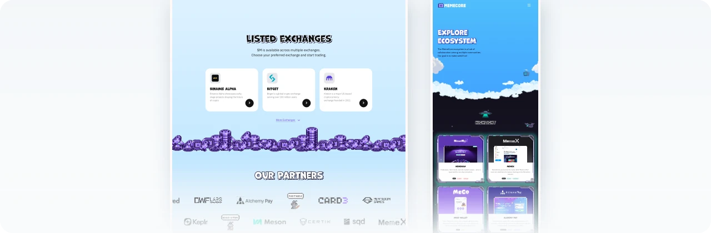
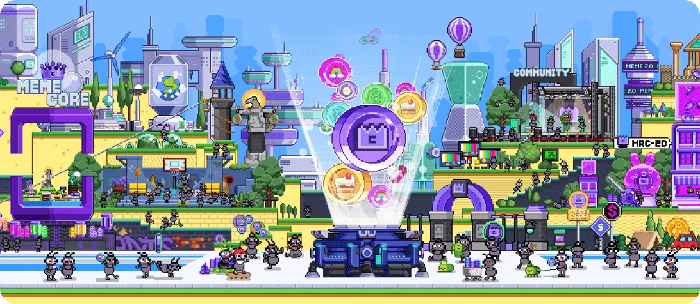

PROBLEM 1
Hidden navigation and no clear starting point

The first screen showed only graphics, and pages were hidden behind a hover interaction. In testing, 3 of 5 couldn’t find the roadmap.
Redesigned MemeCore's site so investors could find key information fast,
then built it myself with AI coding agents when our frontend developer was reassigned.


TEAM
1 Frontend Engineer
1 Backend Engineer
3 Illustrators
1 Growth Lead
2 Marketers
MY ROLE
Product Management
End-to-end Product Design
Front-end Implementation (AI-assisted)
Interaction Design
TIMELINE
Nov 2025 - Jun 2026
TOOLS
Figma
Claude Code
LightRoom
After Effects
MemeCore is a Web3 startup behind M, a community-driven meme coin. After major exchange listings and a top-20 market cap, its website became the first place investors and partners checked.
As the sole product designer and PM, I led the IA, UX, and implementation with engineers and illustrators, and shipped the final build myself with AI coding agents.

Flashy GIF art had grown the community to 600K+, but it didn't explain the project. With little key information and no clear hierarchy, the Growth & Marketing team had to explain MemeCore in every meeting.
“I saw the site, but still don’t get what MemeCore does.”- Prospective Partner
“It looks well-funded, but it’s still a meme coin.”- MemeCore Investor
“The strategy feels focused on short-term price.”- Crypto VC
Six months of Google Analytics and Clarity data showed where users left; a usability test with 5 people showed why. As both PM and designer, I took on both, from design to code.
The first screen showed only graphics, and pages were hidden behind a hover interaction. In testing, 3 of 5 couldn’t find the roadmap.

At 48.6MB, the site was 16× heavier than an average page. Clarity showed 24% of visitors left before it finished loading.
The content was worth reading, but most users left before reaching it. The job was to surface it earlier.

With everyone on multiple projects, I split the scope by impact and effort and aligned each phase across teams.
JUL - AUG 2025
Fix the structure first
OCT - DEC 2025
Adapt to new business goals
MAY - JUN 2026
Scale and speed up
Users' frequent questions set what came first, the business model set the order, and Web3 services like Sui and Monad set familiar patterns.


With Growth and Marketing, I ranked investors' top questions and our key messages, then ordered the page by them.
Pages were hidden inside an illustrated map and appeared only on hover, making key content hard to find.
Key projects and business messages appear in order of importance, each linked to its detail page.
I reframed the debate from aesthetics to business impact, and the team agreed on one rule: interaction for attention, simple illustrations for understanding.
"Simpler visuals will make the information much clearer."
"But it could weaken MemeCore's core identity."
"A beautiful site means nothing if users can't get in.
Let's keep the illustrations, but give each one a clear job."
I used scroll interactions only at moments where we needed to hold their attention.
Opening: Scroll motion draws users into the story so they keep scrolling past the first screen.
$M exchange: Brings attention back to the $M exchange section, a business-critical part of the site.
In information sections, one consistent layout lets illustrations support the content, so users scan faster.

Three months before vs. after, with similar traffic: fewer users left right away, and more reached detail pages.
Bounce rate
- 9.2%
Detail-page visits
+ 21%
Lighthouse scored 55 and 17% of visitors rage-clicked on unresponsive pages. Rather than pause, I connected Claude Code to the Figma API and GitLab and took over the frontend.


Each scene was one heavy GIF, so I kept motion only where it mattered and made the rest static. The loading screen was no longer needed.
The whole scene was a single GIF, so it couldn't be optimized further.

A static, compressed
WebP background.
Each key asset cut out and animated in CSS.


Page weight fell 94% and loading drop-off went from 24% to 6%. I documented the workflow, and it became the company's internal best practice.

Performance score +37
55→92
Smaller page size
17x
Loading drop-off -18pp
24%→6%
I led the project from planning to launch ahead of schedule and earned the company's highest performance rating. But I took the team's yes as capacity and left no buffer for urgent requests. Next time, I'll check each person's workload and plan for the unexpected.